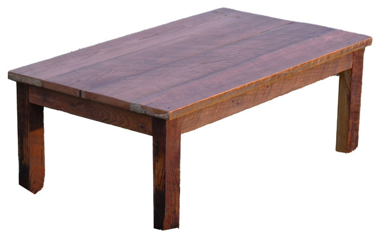

<!--
  Generated template for the Cart page.

  See http://ionicframework.com/docs/v2/components/#navigation for more info on
  Ionic pages and navigation.
-->
<ion-header>

  <ion-navbar color="primary">
    <ion-title text-center>My Cart</ion-title>
  </ion-navbar>

</ion-header>


<ion-content style="background: #eee">


<ion-card *ngFor="let item of cartData.data">
  <ion-card-content no-padding>
    <ion-list> 
  <ion-item-sliding #item>
      <ion-item no-padding >
        <ion-thumbnail item-left class="no-margin">
          
        </ion-thumbnail>

   
     <ion-item no-padding>
       <h2>{{item.product}}</h2>
      
       
       <h2>name
       </h2>
     
</ion-item>
<ion-item no-padding>
  
        
       
    <ion-select item-left>
      <ion-option value="1">1</ion-option>
      <ion-option value="2">2</ion-option>
      <ion-option value="3">3</ion-option>
      <ion-option value="4">4</ion-option>
      <ion-option value="5">5</ion-option>
      <ion-option value="6">6</ion-option>
    </ion-select>
    <span item-right> Rs </span>
      </ion-item>
  

</ion-item>
  <ion-item-options side="right">
    <button ion-button color="danger" (click)="delete(item)">Delete</button>
    </ion-item-options>
    </ion-item-sliding>
    </ion-list> 


     
    


   
  

  </ion-card-content>
</ion-card>


<ion-list>
  <ion-item-sliding #item>
    <ion-item>
      Item
    </ion-item>
    <ion-item-options side="left">
      <button ion-button (click)="favorite(item)">Favorite</button>
      <button ion-button color="danger" (click)="share(item)">Share</button>
    </ion-item-options>

    <ion-item-options side="right">
      <button ion-button (click)="unread(item)">Unread</button>
    </ion-item-options>
  </ion-item-sliding>
</ion-list>


</ion-content>